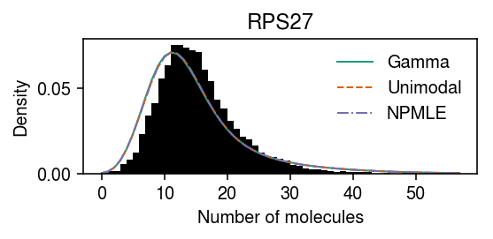
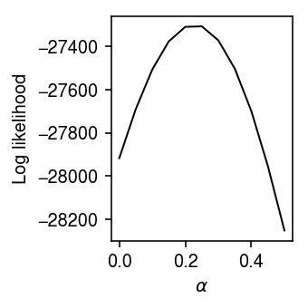
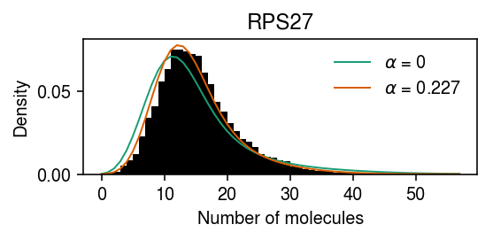

Relaxing the independence assumption on expression models
Table of Contents
Introduction
\[ \DeclareMathOperator\Pois{Poisson} \newcommand\xiplus{x_{i+}} \newcommand\Gfam{\mathcal{G}} \]
We previously found genes at which observed counts depart from the fitted fully non-parametric expression model. These genes appear to depart from the fitted model because the expression model assumes that the latent gene expression levels \(\lambda_{ij}\) are independent of the size factors \(\xiplus\). Inspired by Stephens 2016, let \(\tilde{\lambda}_{ij} = \xiplus^{\alpha} \lambda_{ij}\) for some \(\alpha \in [0, 1]\), and suppose instead
\begin{align} x_{ij} \mid \xiplus, \tilde{\lambda}_{ij} &\sim \Pois(\xiplus^{1 - \alpha} \tilde{\lambda}_{ij})\\ \tilde{\lambda}_{ij} &\sim g_j(\cdot) \in \Gfam. \end{align}Then, applying Poisson ash to observed counts \(x_{1j}, \ldots, x_{nj}\) and size factors \(x_{1+}^{1 - \alpha}, \ldots, x_{n+}^{1 - \alpha}\) yields \(\hat{g}_j\), which can be transformed to compute the prior/posterior over \(\lambda_{ij}\).
Setup
import anndata import numpy as np import pandas as pd import scipy.optimize as so import scipy.stats as st
%matplotlib inline %config InlineBackend.figure_formats = set(['retina'])
import matplotlib.pyplot as plt plt.rcParams['figure.facecolor'] = 'w' plt.rcParams['font.family'] = 'Nimbus Sans'
Results
Example gene
RPS27 departs from all candidate expression models we previously considered.

dat = anndata.read_h5ad('/scratch/midway2/aksarkar/modes/unimodal-data/b_cells.h5ad') gene_info = pd.read_csv('/project2/mstephens/aksarkar/projects/singlecell-qtl/data/scqtl-genes.txt.gz', sep='\t', index_col=0) gof_res = pd.read_csv('/project2/mstephens/aksarkar/projects/singlecell-modes/data/gof/gof.txt.gz', sep='\t', index_col=0) sig = (gof_res .loc[gof_res['method'] == 'unimodal'] .groupby('dataset') .apply(lambda x: x.loc[x['p'] < 0.05 / x.shape[0]].sort_values('p').head(n=100)) .reset_index(drop=True) .merge(gene_info, on='gene', how='left') [['dataset', 'gene', 'name', 'method', 'stat', 'p']]) query = list(dat.var.index).index(sig.loc[sig['dataset'] == 'b_cells', 'gene'].head(n=1)[0])
Try fitting a unimodal model with different choices of \(\alpha\).
x = dat.X[:,query] s = dat.obs['size'] y = np.arange(x.max() + 1) grid = np.linspace(0, .5, 11)
res = {alpha: scmodes.ebpm.ebpm_unimodal(x, np.exp((1 - alpha) * np.log(s)), mixcompdist='halfuniform') for alpha in grid}
Plot the log likelihood as a function of \(\alpha\).
llik = np.array([np.array(res[k].rx2('loglik'))[0] for k in res]) plt.clf() plt.gcf().set_size_inches(2.5, 2.5) plt.plot(grid, llik, lw=1, c='k') plt.xlabel(r'$\alpha$') plt.ylabel('Log likelihood') plt.tight_layout()

The log likelihood is improved by order 100 units by finding a suitable choice for \(\alpha\). Find the \(\alpha^*\) that maximizes the marginal log likelihood using Brent’s method.
def _f(alpha, x, s): return -np.array(scmodes.ebpm.ebpm_unimodal(x, np.exp((1 - alpha) * np.log(s)), mixcompdist='halfuniform').rx2('loglik'))[0] opt = so.minimize_scalar(_f, bracket=[0, 1], method='brent', args=(x, s)) assert opt.success opt.x
0.22711558742350224
Take the estimated expression models for \(\alpha \in \{0, \alpha^*\}\), and plot the average marginal density for each, superimposed on the original data.
res[opt.x] = scmodes.ebpm.ebpm_unimodal(x, np.exp((1 - opt.x) * np.log(s)), mixcompdist='halfuniform')
pmf = dict() for alpha in (0, opt.x): g = np.array(res[alpha].rx2('fitted_g')) a = np.fmin(g[1], g[2]) b = np.fmax(g[1], g[2]) sa = np.exp((1 - alpha) * np.log(s)) comp_dens_conv = np.array([((st.gamma(a=k + 1, scale=1 / sa.values.reshape(-1, 1)).cdf(b.reshape(1, -1)) - st.gamma(a=k + 1, scale=1 / sa.values.reshape(-1, 1)).cdf(a.reshape(1, -1))) / np.outer(sa, b - a)).mean(axis=0) for k in y]) comp_dens_conv[:,0] = st.poisson(mu=s.values.reshape(-1, 1) * b[0]).pmf(y).mean(axis=0) pmf[alpha] = comp_dens_conv @ g[0]
cm = plt.get_cmap('Dark2') plt.clf() plt.gcf().set_size_inches(4, 2) plt.hist(dat.X[:,query], bins=np.arange(dat.X[:,query].max() + 1), color='k', density=True) for i, k in enumerate(pmf): plt.plot(y, pmf[k], c=cm(i), lw=1, label=rf'$\alpha$ = {k:.3g}') plt.legend(frameon=False) plt.xlabel('Number of molecules') plt.ylabel('Density') plt.title(gene_info.loc[dat.var.index[query], 'name']) plt.tight_layout()

Compare the log likelihood of the model \(\alpha = \alpha^*\) against \(\alpha = 0\).
res[opt.x].rx2('loglik') - res[0].rx2('loglik')
array([617.77478881])
Related work
Wang et al. 2018 include a “log-linear form” for the size factor in the method DESCEND, which has exactly the same form proposed here (they cite Bacher et al. 2017 for inspiration). However, they did not consider the impact of changing the size factor on the interpretation of the latent gene expression levels.